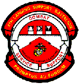
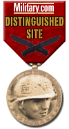

|
|
 |
USMC 4th MarDiv, 4th FSSG |
Choose from the following 6 sections:
1) 48 of my Photos and the Alpha Co. e-mail list (3 Mb photo page) |
2) 51 Photographs from Jeff Dunaway (3 Mb photo page) |
3) 49 Photographs from Curtis Larson (3 Mb photo page) |
| 4) 77 Photographs from Bill Crossland (5 Mb photo page) |
6) The
4th LSB "A" Co./"H&S" Co. (Seattle)
- Reunion Page |
(I'm still working on the photo albums of Roice and Breezee, so check back again later...)
This page is dedicated to our former armorer S/Sgt William R Anderson who passed away in April of 2003 after a long battle with leukemia and was approaching a bone marrow transplant. - Semper Fi, Bill. You will always be remembered...
I would also like to recognize a few others from the unit -
S/Sgt Kevin Jackson (who showed us all how to be strong in the most challenging
situation), and to those who have continued their service in the USMCR (long
after most of us got out) and have more recently been deployed or helped out
with deployments for operations with or in Afghanistan and Iraq:
Joe Stinton, Dave Latendresse, Andy Gould, Craig Dawson, Pierce Heath,
and all of the current members of the 4th LSB (Ft. Lewis) who keep the world
safe for our kids.
Feel free
to link to this main page and help yourself to the banner at
the top (or click here for the banner).
Feel free to proportionally
resize the banner as necessary for your page.
Number
of Hits to this website:

This page
designed, owned, operated, conceived, produced, imagined, edited,
constructed, re-constructed, adapted, redesigned, and maintained
by Kurt Lange.  (<--
This is the anti-spam version for my email address.)
This site
Copyright 1997-2004 Kurt Lange. I'd be glad to pass out copies
of the photos, but just ask. (I could probably even zap you
better resolution copies than what you'd download here.)
(<--
This is the anti-spam version for my email address.)
This site
Copyright 1997-2004 Kurt Lange. I'd be glad to pass out copies
of the photos, but just ask. (I could probably even zap you
better resolution copies than what you'd download here.)